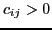
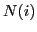
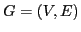
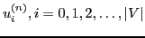
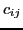
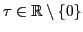
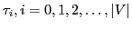
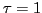
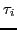
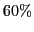

Next: Bibliography
Nikolaos, N M Missirlis
The nine neighbor Extrapolated Diffusion
Department of Informatics and Telecommunications
University of Athens
Panepistimiopolis
15784
Ilisia
Athens
Greece
nmis@di.uoa.gr
Aikaterini Dimitrakopoulou
The performance of a balancing algorithm can
be measured in terms of number of iterations it requires to reach a
balanced state and in terms of the amount of load moved over the
edges of the underlying processor graph. In the Diffusion (DF)
method [3], [1] a processor simultaneously sends
workload to its neighbors with lighter workload and receives from
its neighbors with heavier workload.
More specifically DF is given by the
following iterative scheme
where

are the edge weights (or diffusion parameters),

is the set of the nearest neighbors of node
of the graph

and

is the load after the
nth iteration on node
. The main problem here is the
determination of the parameters 
such that the rate of
convergence of DF is maximized.
Various attempts to solve this problem are presented in
[3,6,4,5] and [9].
In [7] the following Extrapolated Diffusion (EDF) method was introduced
where

and
are the
extrapolation parameter and the edge weights,
respectively,
 is the set of the nearest neighbors of
the node
of the graph
and
is the load after the
nth iteration on node
.
In fact, we let the extrapolation parameter vary for each node
, so
instead of
is the set of the nearest neighbors of
the node
of the graph
and
is the load after the
nth iteration on node
.
In fact, we let the extrapolation parameter vary for each node
, so
instead of  in (
in (![[*]](file:/usr/share/latex2html/icons/crossref.png) )
we introduced a set of parameters
)
we introduced a set of parameters

and called ()
the local EDF method [7,8]. Note that if 
,
() is the classical Diffusion (DF) method
[3,1]. In [9] optimum values for the edge weights
were determined under the hypothesis that they are all equal.
The generalized problem of determining optimum values for the edge
weights
and  was first solved in [7]. In
particular, closed form formulae for the optimum values for
was first solved in [7]. In
particular, closed form formulae for the optimum values for 
s
and
s were determined for the nD-torus [7] and nD-mesh
[8]
by applying local Fourier analysis [2]. As a result, it was
found that for square tori and meshes EDF coincides with DF whereas for
orthogonal tori and meshes it becomes twice as fast as DF.
In addition, it was shown that EDF for orthogonal tori is four times
faster than orthogonal meshes [8].
In the present work we consider the case of increasing the number of
neighbors of node i for the computation of its load.
In other words we consider the nine neighbor weighted Laplacian matrix
formed not only by the five nearest neighbor nodes but also by their four
neighbors with path length two from node i in an attempt to increase the
convergence rate of the EDF method. As a consequence, we show that the
rate of convergence of EDF is improved asymptotically by 
for torus
graphs.
The rest of the paper is organized as follows: In section 2 we
introduce the local NEDF method using nine neighbors of node i. In
section 3 we find closed form formulae for the optimum values of the
parameters
such that the convergence of the local NEDF method is
maximized. The determination of the optimum values for the edge weights
is presented in section 4 with a comparison of the NEDF and EDF
methods with five and nine neighbors, respectively for torus graphs.
Section 5 presents our numerical experiments and finally, in section 6 we
state our conclusions.
Next: Bibliography
root
2012-02-20